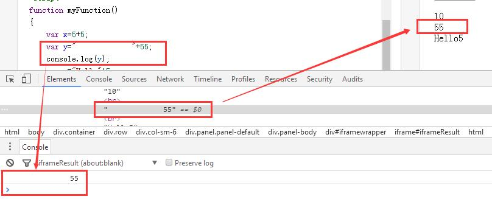
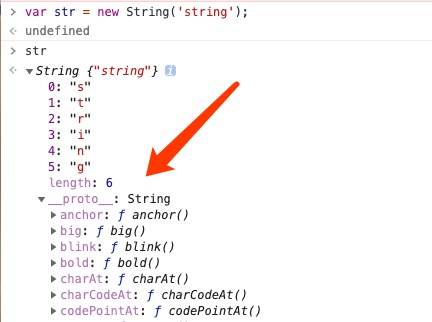

JavaScript 演算子
演算子 = は代入に使用します。
演算子 + は加算に使用します。
演算子 = は JavaScript 変数に値を代入するために使用します。
算術演算子+値を加算するために使用します。
JavaScript 算術演算子
| 演算子 | 説明 | 例 | x の演算結果 | y の演算結果 | オンライン例 |
|---|---|---|---|---|---|
| + | 加算 | x=y+2 | 7 | 5 | 例 » |
| - | 減算 | x=y-2 | 3 | 5 | 例 » |
| * | 乗算 | x=y*2 | 10 | 5 | 例 » |
| / | 除算 | x=y/2 | 2.5 | 5 | 例 » |
| % | 剰余（余り） | x=y%2 | 1 | 5 | 例 » |
| ++ | インクリメント | x=++y | 6 | 6 | 例 » |
| x=y++ | 5 | 6 | 例 » | ||
| -- | デクリメント | x=--y | 4 | 4 | 例 » |
| x=y-- | 5 | 4 | 例 » |
JavaScript 代入演算子
代入演算子は JavaScript 変数に値を代入するために使用します。
与えられたx=10 と y=5、以下の表は代入演算子を説明しています：
| 演算子 | 例 | 同等 | 演算結果 | オンライン例 |
|---|---|---|---|---|
| = | x=y | x=5 | 例 » | |
| += | x+=y | x=x+y | x=15 | 例 » |
| -= | x-=y | x=x-y | x=5 | 例 » |
| *= | x*=y | x=x*y | x=50 | 例 » |
| /= | x/=y | x=x/y | x=2 | 例 » |
| %= | x%=y | x=x%y | x=0 | 例 » |
文字列に使用する + 演算子
+ 演算子はテキスト値または文字列変数を加算（連結）するために使用します。
2 つ以上の文字列変数を連結するには、+演算子を使用してください。
例
2 つ以上の文字列変数を連結するには、+演算子を使用します：
txt1="What a very";
txt2="nice day";
txt3=txt1+txt2;
txt3演算結果は次のとおりです:
What a verynice day
試してみる »
2 つの文字列の間にスペースを追加するには、スペースを一方の文字列に挿入する必要があります：
例
txt1="What a very ";
txt2="nice day";
txt3=txt1+txt2;
上記のステートメントを実行した後、変数txt3が含む値は：
What a very nice day
試してみる »
またはスペースを式に挿入します：:
例
txt1="What a very";
txt2="nice day";
txt3=txt1+" "+txt2;
上記のステートメントを実行した後、変数txt3が含む値は：
What a very nice day
試してみる »
文字列と数値に対する加算演算
2 つの数値を加算すると数値の合計が返されます。数値と文字列を加算すると文字列が返されます。次の例のとおりです：
ルール:数値を文字列と加算すると、結果は文字列になります！
その他の拡張
冰弦钰月
133***6556@qq.com
冰弦钰月
133***6556@qq.com
美芽
106***1206@qq.com
空テキスト+数字と文字列を加算した結果は、テキストにスペースがいくつあっても数字を文字列に変換します。ただし、スペースは長さにカウントされます。
美芽
106***1206@qq.com
一一夢灬紅塵
201***034203zwf@ncist.edu.cn
さらに説明したいと思います。画像の説明：

HTML はスペースを圧縮するため、見た目には文字列が表示され、スペースは表示されません。
一一夢灬紅塵
201***034203zwf@ncist.edu.cn
GermanView`
282***579@qq.com
よくある異なる型の演算の変換方法：
1. 文字列と数値を加算すると、数値は文字列に変換されます。
2. 数値とブール値を加算すると、ブール値の false は 0、true は 1 に変換されます。
3. 文字列とブール値を加算すると、ブール値は文字列に変換されます。
GermanView`
282***579@qq.com
Roojay
roo***@126.com
剰余演算の結果の符号は、左側の値の符号にのみ関係します：
Roojay
roo***@126.com
青妙
271***8654@qq.com
数値と null（空値）を加算すると、null は数値 0 に変換されます：
文字列と null（空値）を加算すると、null は文字列に変換されます：
青妙
271***8654@qq.com
chenyy_jason
cyy***@126.com
1. string、number などの基本型の場合、== と === には違いがあります。
2. Array、Object などの高度な型の場合、== と === に違いはありません。
「ポインタアドレス」の比較を行います。
3. 基本型と高度な型の場合、== と === には違いがあります。
chenyy_jason
cyy***@126.com
住宅価格が高いからこそ、より一層努力が必要だ
128***2546@qq.com
1. 文字列は非常に強力なデータ型です。加算を実行する+とき、加算されるオブジェクトを一律に文字列として処理します。
2. bool 型は数値型と加算する場合、0 または 1 として扱われます。
3. null 型は数値型と加算する場合、0 として扱われます。
4. bool 型と null 型を加算する場合、整数型との加算として扱われます。
5. undefined は文字列との加算の場合のみ有効で（undefined は文字列 "undefined" として扱われます）、その他の場合はすべて NaN を返します。
6. 剰余%演算の結果は、最初の数値の正負のみに依存します。
7. String データ型がサポートするメソッドとプロパティを確認する：
ウェブページを開いた後、F12 で開発者デバッグ環境を開き、console タブページを見つけて、次を実行します：
var str = new String('string'); strリストのドロップダウン矢印をクリックするだけです:

住宅価格が高いからこそ、より一層努力が必要だ
128***2546@qq.com
数学
183***1835@qq.com
空テキスト+数字と文字列を加算した結果は、テキストにスペースがいくつあっても数字を文字列に変換します。ただし、スペースは長さにカウントされます。
1. 文字列は非常に強力なデータ型です。加算 + を実行するとき、加算されるオブジェクトを一律に文字列として処理します。
2. bool 型は数値型と加算する場合、0 または 1 として扱われます。
3. null 型は数値型と加算する場合、0 として扱われます。
4. bool 型と null 型を加算する場合、整数型との加算として扱われます。
5、undefined は文字列との加算の場合を除き（undefined は文字列"undefined"として扱われます）、その他の場合はすべて NaN を返します。
数学
183***1835@qq.com
virus
vis***ia_dignics@163.com
文字列(string)型と数字(number)型の加算+演算はnumberまず暗黙的にstring型に変換し、それからstringの+演算規則に従って文字列連結を行い、連結後の文字列を返します。これにより JavaScript 独自の型変換方式が得られます。例は以下のとおりです。
また、似たような方法を補足します。文字列を数値に変換したい場合は、減算-演算で行えます。もちろん、ここには場合があります。すなわち、演算に参加するオペランドstringが有効な型に変換できないnumber場合、最終結果は返されます。NaN。
virus
vis***ia_dignics@163.com